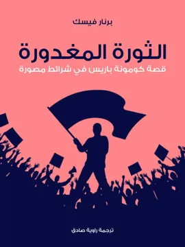

الثورة المغدورة: قصة كومونة باريس في شرائط مصورة

قراءة عربية أصلية محددة النطاق في الصفحات 7، 8 من ملف PDF المرتبط، وليست تلخيصا كاملا للكتاب. نناقش ما تدعمه هذه المقاطع فقط.
مئوية الكومونة الغريبة
يفتتح التقديم بوصف الاحتفال الذي اتسم بالغرابة: اتسم الاحتفال بمئوية كومونة باريس في عام 1971م بالغرابة؛ تباكت جريدة الفيجارو عليها بحرقة وتعاطف الأورور (الفجر) معها، ومدح السيد سانجينيتي في التلفزيون وطنية الكومونيين. والاعتبار الشعبي الذي وُضع تحت تصرف الاحتفال بالكومونة ظل أكثر تواضعًا، رغم عدم الدخول في عهد التقشف رسميًا. لم تكن تظاهرة حائط الاتحاديين الضخمة أبدًا أكثر تأثيرًا أيضًا؛ صنعت القوى الشعبية وحدها، كما هو مألوف، نجاحها. لكن في الختام أنكرت سلالة تيير... — هكذا يمهد المؤلف لسرد قصة الكومونة في شرائط مصورة، من ذاكرة احتفالها المئوي المتردد بين النخب والشعب.
زاوية وحدود القراءة
قراءة في تقديم الكتاب من الصفحتين 7 و8. أسماء الصحف والشخصيات الفرنسية وردت معربة في النص المقروء. قصة الكومونة في الشرائط المصورة التالية خارج نطاق المقروء. الكتاب مترجم، والترجمة العربية منقولة بأمانة عن النص المقروء.
الطبعة والقراءة
هذه النسخة من الكتاب صادرة ومتاحة مجانًا بموجب اتفاق قانوني بين مؤسسة هنداوي والسيدة الأستاذة راوية صادق.
تنزيل PDF المجاني ↓ القراءة والمصدر الرسمي ↗